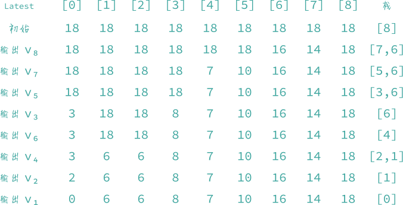

6.6 活动网络
「活动 activities」 所有的工程（除了最简单的情况之外）都可以划分为若干个称为「活动」的子工程。且部分子工程需要先做完其他子工程才能完成，因此它们还有一种优先关系。
「AOV 网」或「顶点表示活动的网 activity on vertex network」 是用顶点表示活动或任务，边表示活动或任务之间的优先关系的有向图 。边 当且仅当需要先做子工程 才能再做子工程 。如下图，需要先做 才能再做 。

- 当且仅当从顶点 到 存在一条有向路径，则顶点 称为顶点 的 「前驱 predecessor」。
- 当且仅当 是 中的一条边，则称顶点 为顶点 的 「直接前驱 immediate predecessor」。
- 如果顶点 是顶点 的前驱，则称顶点 为顶点 的 「后继 successor」。
- 如果顶点 是顶点 的直接前驱，则称顶点 为顶点 的 「直接后继 immediate successor」。
- 如果一个 AOV 网表示一个可行的工程，其优先关系「」必须是
- 「传递的」 当且仅当对所有的三元组 ，都有 且 。
- 「反自反的」 集合 上的所有元素 都有 不为真。
- 「偏序 partial order」 是一种优先关系，既是传递的又是反自反的。
「拓扑序列 topological order」 是由有向图中所有顶点形成的一个线性序列，对图中任意两个顶点 和 ，如果顶点 是顶点 的前驱，则顶点 在拓扑序列中排在顶点 的前面。如上图的拓扑序列有若干种，包括： 和 拓扑序列的算法显而易见，首先列出图中没有前驱的所有顶点；然后删除这些顶点及其出边，直到全部顶点都被列出，如果图中剩下的顶点都有前驱而不能将其删除，则证明图中含有环路。这个算法的时间复杂度为 。
「AOE 网」或「边表示活动的网络 activity on edge network」 图中的有向边表示在一个工程中所需完成的任务或活动，而顶点表示事件，用来标识活动的完成。事件 和 分别表示工程开始和工程完成。当一个事件发生时，就表明出发该事件的所有活动都已经完成。如下图，活动 可以同时进行。而只有各自对应的事件 发生后，活动 才能开始。完成整个工程所需的最短时间是从开始顶点到终止顶点的最长路径的长度（这里假定路径的长度是完成该路径上的所有活动所需的时间之和）。

- 「关键路径 critical path」 就是一条具有最长路径长度的路径。上图中，路径 是一条关键路径，其路径长度为 18。一个 AOE 网中的关键路径可能不止一条。上图中，路径 也是一条关键路径。
- 一个事件 可以发生的 「最早发生时间 earliest time」 ，是从开始顶点 到顶点 的最长路径的长度。例如，事件 的最早发生时间是 。事件的「最早发生时间」确定了所有从该事件顶点引出的边所代表的活动的 「最早开始时间」，即事件 的「最早发生时间」等同于活动 和 的「最早开始时间」。把活动 的最早开始时间记作 。
- 活动 的 「最迟开始时间 latest time」 记作 ，即活动 最迟的开始时间。如上图，，而 。
- 「关键活动 critical activity」 是指满足 的活动。一个活动的最迟开始时间 与最早开始时间 之间的差说明了该活动的关键程度。它给出了在不增加完成整个工程所需时间的前提下，活动可以推迟或延缓的时间。
- 『事件最早发生时间的计算』 此算法在拓扑排序算法稍作修改即可。事件最早发生时间计算：
其中 是顶点 的所有直接前驱顶点的集合。如下图为前面 AOE 网的邻接表，和计算
earliest的顺序。首先earliest[]中元素的初始值为 0，而dur域为活动持续时间。首先计算 的邻接顶点 的earliest的值，count减 1，此时它们的count域均为 0，代表它们的直接前驱均已完成，即可将它们入栈。然后再将 出栈，找到 的邻接顶点 ，由于earliest[5] < earliest[3] + dur[5]，因此earliest[5]被直接赋值为earliest[3] + dur[5]值为 5+2=7。继续将 出栈，找到邻接顶点 ，计算出earliest[7]，count减 1，但此时count[7]不为 0，代表其直接前驱顶点没有完成，因此 不入栈。，继续将 出栈，以此类推。即可得出下表的earliest值的执行顺序。


- 『事件最晚发生时间的计算』 与计算最早发生时间不同的是，最晚发生时间是从后向前计算，计算公式为：
其中 是顶点 的所有直接后继顶点的集合。
latest[i]的初始值为earliest[n-1]，即整个工程的最早完成时间，与最早发生时间的计算类似，如下图为 AOE 网的逆邻接表，和计算latest的顺序。


一旦得到 earliest 值和 latest 值，就可以利用它们计算各个活动的 和 时间，从而也可以确定各个活动的关键程度。如下表：
| 活动 | 最早开始时间 | 最迟开始时间 | early-late |
关键活动 |
|---|---|---|---|---|
| 0 | 0 | 0 | 是 | |
| 0 | 2 | 2 | 否 | |
| 0 | 3 | 3 | 否 | |
| 6 | 6 | 0 | 是 | |
| 4 | 6 | 2 | 否 | |
| 5 | 8 | 3 | 否 | |
| 7 | 7 | 0 | 是 | |
| 7 | 7 | 0 | 是 | |
| 7 | 10 | 3 | 否 | |
| 16 | 16 | 0 | 是 | |
| 14 | 14 | 0 | 是 |
在 AOE 网中，删除所有非关键活动得到下图。其中所有从顶点 到顶点 的路径都是关键路径，且除了图中给出的这些路径外，原图中不再有其他关键路径。

对于活动网络，拓扑排序只能检测出活动网络中的有向环路。但是，网络中还可能存在其他缺陷，如存在从开始顶点无法达到的顶点。当对这样的网络进行关键路径分析时，就会有若干个顶点，使得
earliest[i] = 0。因此，还可以利用关键路径分析其检测工程计划中的这种缺陷。